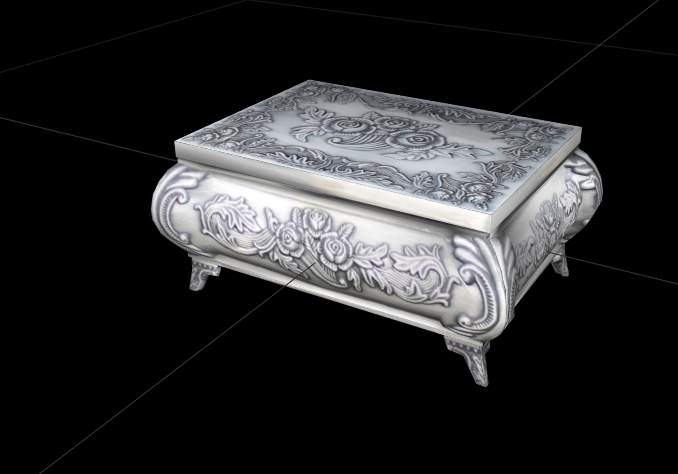

|
Asset Lifecycle Developer(s): Asylum Status: ☀️ Ready for review Asset Status Release(s): Disane | Kacari | Baedoor City Priority: Medium Type: 🪑 Furniture Files |

Silver small chest taken from this rejected PTR claim under Asylum's permission - would make for really nice FurnR small chest for baedoorians. Stylistically feels very Morrowindy so unless vanilla textures are used, doesn't need really any adjustments, just making proper folder/esp structure.
|
 Unknown chest made by Asylum |